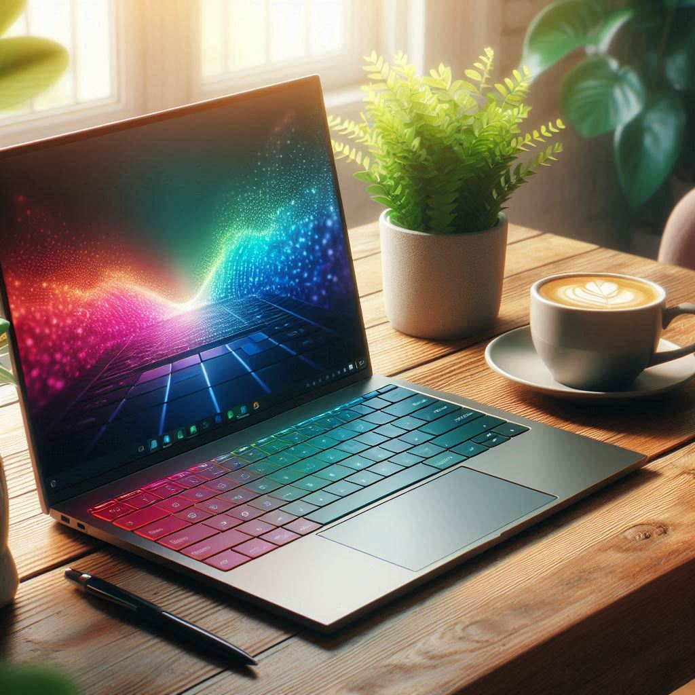

Laptop Tech Pro 2024

Fiche Technique
- Processeur : Intel Core i9 de 11e génération, jusqu’à 5,0 GHz en mode Turbo.
- RAM : 32 Go de DDR4
- Stockage : SSD NVMe de 1 To
- Carte graphique : NVIDIA GeForce RTX 3080 avec 8 Go de VRAM
- Wi-Fi 6 pour des vitesses de connexion ultra-rapides.
- Bluetooth 5.2 pour connecter vos périphériques sans fil.
- Ports : USB-C, USB-A, HDMI, lecteur de carte SD.
- Autonomie : La batterie de 80 Wh offre jusqu’à 12 heures d’utilisation continue, idéale pour les longues journées de travail.
- Sécurité : Le Laptop Tech Pro 2024 est équipé d’un capteur d’empreintes digitales intégré pour un déverrouillage sécurisé et rapide.
- Système d’exploitation : Préinstallé avec Windows 11 Pro pour une expérience logicielle optimale.
Prix
1,299€